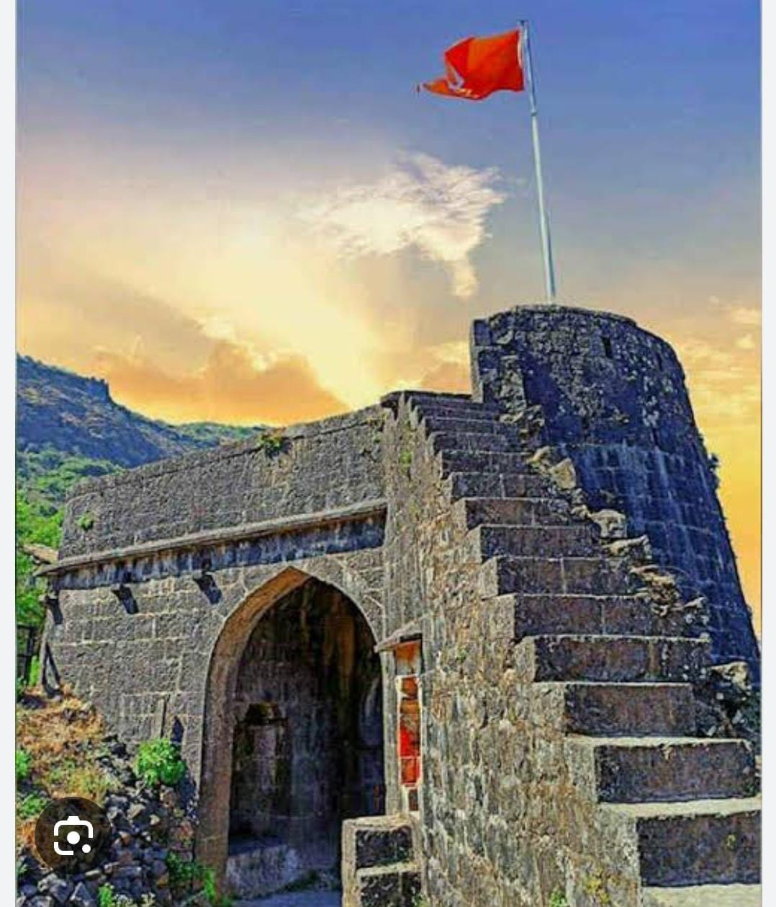
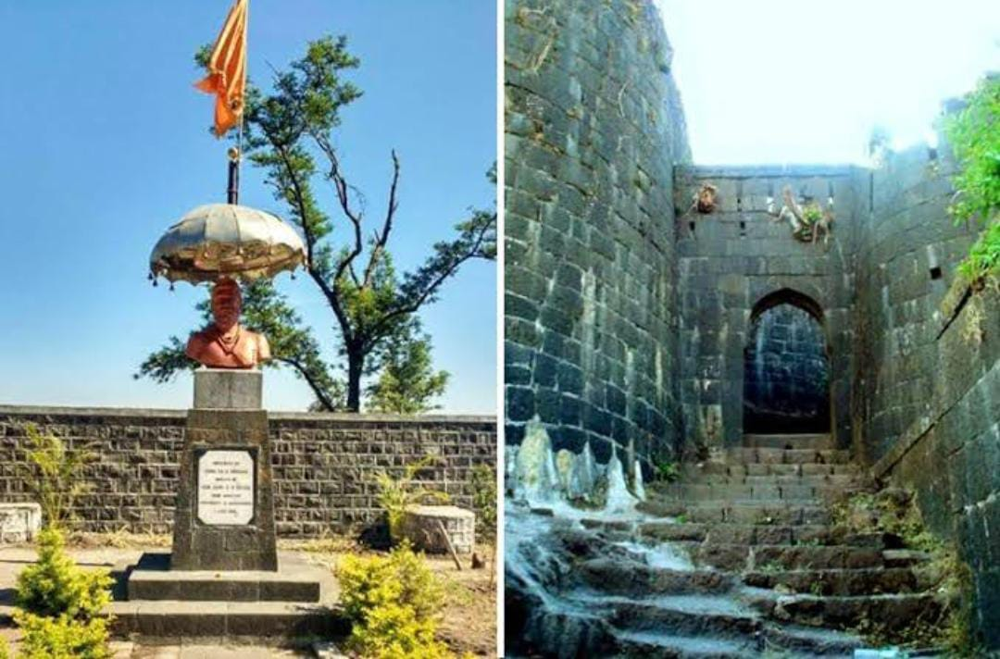

Purandar Fort is a mountain fort in Pune district in Western Indian state of Maharashtra, India. The fort stands at 1,374 metres (4,508 ft) above the sea level in the Western Ghats, 50 kilometres (31 mi) to the southeast of Pune.
The twin forts of Purandar and Vajragad (or Rudramal) of which the latter is the smaller of the two, is located on the eastern side of the main fort rising 1,347 metres (4,419 ft) above sea level.The village of Purandar takes its name from this fort.It is the birthplace of DharmaveerChatrapati Sambhaji Maharaj.The oldest known reference of existence of the Purandar fort dates back to the Yadava dynasty in the 11th century.
In 1646 A.D, Shivaji Maharaj, still in his youth, in one of his first victories for the Maratha Empire, raided and established control of the fort. In 1665 A.D, the Purandar Fort was besieged by the forces of Aurangzeb, under the command of Jai Singh II and assisted by Diler Khan. Murarbaji Deshpande of Mahr, who was appointed as the killedar (keeper of the fort), offered strong resistance against the Mughal forces ultimately giving up his life in a struggle to retain the fort. Shivaji, daunted at the prospect of the fall of his grandfather's fort, signed a treaty known as the First Treaty of Purandar with Aurangzeb in 1665. According to the treaty,Shivaji Maharaj handed over twenty-three forts including Purandar, and a territory with a revenue of four lakh hons and was made the jagirdar of the territory.In 1670 A.D, the truce did not last long as Shivaji Maharaj revolted against Aurangzeb and recaptured Purandar after just five years.
In 1818, the Purandar Fort was invaded by a British force under General Pritzler. On 14 March 1818, a British garrison marched into Vajragad(the smaller fort). As Vajragad commanded Purandar, the commandant had to accept terms and the British flag was hoisted at Purandar on 16 March 1818. During the British Raj, the fort was used as a prison. During World War II, it was an internment camp for enemy-alien (i.e. German) families. Jews from Germany were interned. A German prisoner, Dr. H. Goetz was held here during World War II. He studied the fort during his stay and later published a book on it. The fort's major use however, was as a sanatorium for the British soldiers.
The thousand-year-old Narayaneshwar temple of the Hemadpanthi architecture built by the Yadavas still exists at the base village of the fort called Narayanpur.Temple of the Purandeshwar deity from which Purandar takes its name.It is believed that Purandar is the broken part of the Dronagiri Parvat, which Hanuman carried in the Ramayana.There are many temples dedicated to Purandareshwar (the fort's patron god, from which it also takes its name) and Sawai Madhavrao Peshwa here. There is a statue of Murarbaji Deshpande, the commander (killedar) of the fort who gave up his life in order to protect the fort from the Mughals. The northern part of fort is the machi has a low fall with several bastions and an imposing gate with two towers.From the lower level of the machi, a staircase leads to the upper level called Ballekilla.The first structure of the Ballekilla that comes into view is the Dilli Darwaja (Delhi Gate). This area also houses an ancient Kedareshwar (Shiva) temple. The BALLEKILLA is also surrounded by steep drop on three sides.